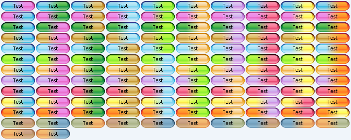
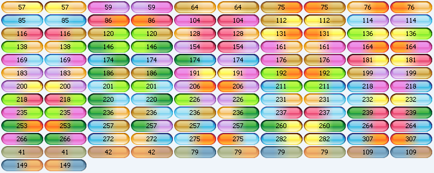
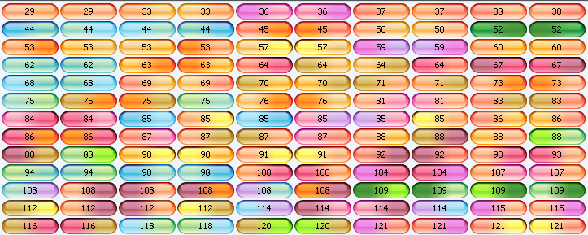

With the release of version 2.2 of Substance look-and-feel
scheduled for this Monday, i have started to work on the next version (2.3 code-named Firenze).
One of the things i wanted to improve are color themes, and a lot of work has already been done
in this area. For now, i want to introduce the concept of "mixed" themes.
Substance comes with eighteen core
and twenty one plugin themes. The total
is thirty-nine. By the end of the article you will see how after a few hours of coding this has
been increased by 630 additional themes. Here is a sample screenshot of mixed themes and how
they look like on buttons:
The mixed theme is composed of two base themes. When some mixed theme is used, the resulting
image is composed from these two based themes. The first 30% is the first theme, the last 30%
is the second theme and the middle 40% is the blending between the two. Now,
Chet has
mentioned the concept of color distance. In the simplest computation, it's the Euclidean
distance between the color components (red, green, blue). For the human perception, it's
better to use hue-saturation-value scale or assign different coefficients to red-green-blue
(as when RGB is translated to gray-scale). The examples above showcase some of the best matches
distance-wise. They are not too close (so the two distinct themes are visible) and not too far
(so the themes are not dissonant). The entries above are:
- Aqua and Light Aqua
- Aqua and Bottle Green
- Barby Pink and Raspberry
- Bottle Green and Lime Green
- Brown and Sun Glare
- Sunset and Orange
Here is a screenshot of all available mixed themes (generated in the Substance test application) -
122 themes. This screenshot is ordered by the first theme (all entries in a row have the same first
base theme):

Here is a screenshot of the same themes ordered by simple Eucledian distance (shown as the button text):

Once you drop the theme-pack plugin
in the classpath, the number of mixed themes increases from 122 to 630. Here is the screenshot
of all available mixed themes ordered by distance (click to see all 630) - as you can see two
themes that are two close do not produce the desired multicolor effects:

This is one of the reasons i prefer Java2D over image-based drawing (such as Synth-based LAFs).
You need to invest a little bit more in the programming, but the outcome is much more generic -
once a new theme is added to Substance, 20+ new mixed themes are available at no cost. In addition,
once a mixed theme is set as Substance current theme, it is used for all controls (buttons,
checkboxes, tabs, spinners, sliders, scroll bars etc). Think about the amount of work needed
to be done for each Synth-based theme...{kind=link}